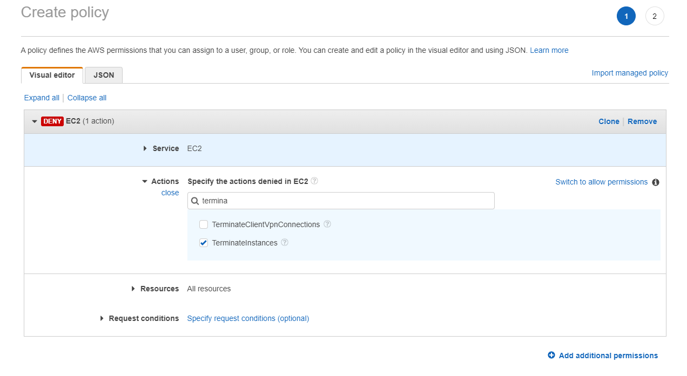
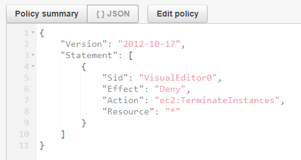
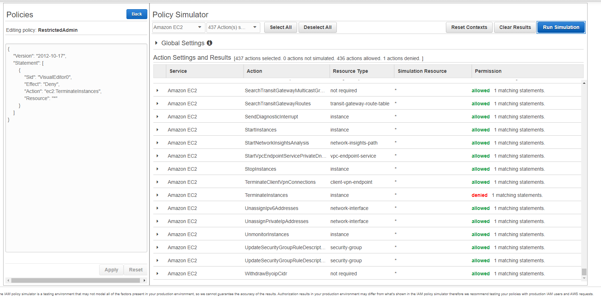

AWS SAA - Design Secure Applications and Architectures
- Part One: Protecting AWS Credentials
- Part Two: Capturing and Analyzing Logs
- Part Three: Protecting Network and Host-level Boundaries
- Part Four: Protecting Data at Rest
- Part Five: Protecting Data in Transit
- Part Six: Configuring Data Backup, Replication, and Recovery
Part One: Protecting AWS Credentials
Security is about protecting data.
The CIA Triad
- Confidentiality
- Integrity
- Availability
Confidentiality: Only authorized parties can access data. (ACLs and encryption)
Integrity: Data has not been improperly modified. Includes knowing if data has been modified.
Availability: Authorized parties have access to data when they need it. Includes protecting systems that store, process, and deliver data.
Defense in depth: Protecting the confidentiality, integrity, and availability of data by securing everything that touches the data, including storage, compute and networking
Levels of Architecture: AWS services, Operating systems, Applications
AWS Credentials
Root User: Full access to all AWS resources. Only one root user per account.
IAM principal: Any entity(could be a user or an application) that can perform actions on AWS services and resources. Policies determine what permissions a principal has
Locking down the Root user: Enable MFA. Don't use the root user for administrative tasks. Use a non-root IAM user with administrative permissions
IAM Principal: The foundation of IAM. An entity that can take an action on an AWS service. Often used as a synonym for identity. Principles include users and roles
A non-root principal has no permissions by default. Policies determine what permission a principal has
You must grant permissions to a principal by associating it with a policy.
Policy and Permission: A policy consists of multiple permission statements. A permission statement consists of 4 elements.
- Effect (allow or deny)
- Service (etc: EC2)
- Action/Operation (RunInstances)
- Resource (image/ami-fjdfjfsdk)
- Request condition(MFA, IP range, time...) (198.51.100.0/24)
This permission will allow a principal to run an EC2 instance with certain AMI, when it is in certain IP range.
AWS managed policies: AWS has many managed policies created for us to use. (they are updated regularly to include new services)
The deny effect always takes precedence over the allow effect (deny > allow)
We can create inline policy for a user to deny he's access to terminate any EC2 instances.
This is the JSON representation of the policy
We could use policy simulator to check the effectiveness of the policy.
We could also create inline policy for a group.
Summary
- Implement MFA for the root user
- User an administrative user instead of root user
- AWS managed policies are updated as new services and actions are added
- A policy permission consists of an effect, service, action/operation and resource
- A user policy is an inline policy embedded in a user
- A group policy is embedded in a group
- Customer Managed policies work like AWS managed policies, but are created and managed by you